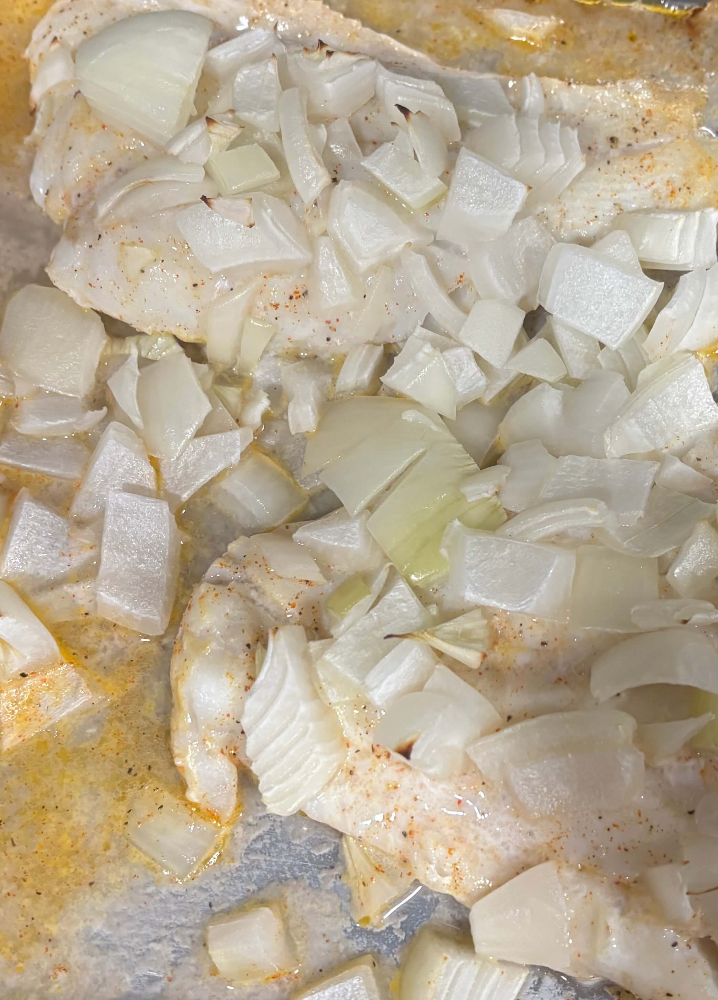

Home
Baked Fish Fillet

3 servings
Prep: 10 mins, Cook: 25 mins
Ingredients
- 1 pound white fish fillets (cod, haddock, halibut, flounder, mahi mahi)
- ½ teaspoon salt
- ground black pepper to taste
- 1 tablespoon lemon juice
- 2 teaspoons melted butter
- 1 teaspoon minced onion
Steps
- Gather all ingredients. Preheat the oven to 400 degrees F (200 degrees C).
- Place fish in a baking dish; season with salt and pepper.
- Mix together lemon juice, melted butter, and onion in a small bowl; pour over flounder.
- Bake in the preheated oven until fish is opaque and flakes easily with a fork, 25 to 30 minutes.